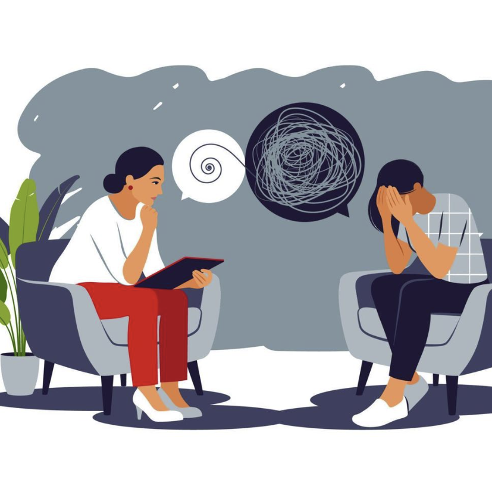

Medical Side Podcast
Watch More!
We at the Medical Side Podcast are a group of students at the University of Nevada, Reno dedicated to exploring important topics in healthcare, medical advocacy, and student wellness. Our episodes feature conversations with experts, personal stories, and discussions about how medical issues impact our communities.
View EpisodesPodcast Members' Research
Learn More About The Episode Topics
Advocacy
Context
Alois Alzheimer reported a disease similar to Senile Dementia in 1906 in a 50-year-old woman and had a patient named Auguste D. Later, Alzheimer's disease has been around for over 100 years and there is still no effective treatment or cure. There is also no early diagnosis or an easy way to tell if someone has the disease or not.
Statistics
Currently, there are over 7 million Americans living with Alzheimer's Disease and that number is going to double by 2050. The disease is more likely to occur in women than in men: 1 in 5 women and 1 in 10 men. The disease is also the 6th leading cause of death around the world killing over 114,020 people in a population of 334,914,895 people.
More Info
For more information on Alzheimer's Disease Research, click the link below:
Research Link
Antibiotic Resistance
Advocacy
Test First Approach
Healthcare clinics should prioritize testing illnesses before prescribing antibiotics in cases where the illness is likely bacterial. Researchers at the University of New Jersey recommend "test and treat" prescription of antibiotics as a BMJ study that found that using quick c-reactive protein tests greatly reduced 'over prescription of potentially dying antibiotics'. "Test to cure" prescriptions are essential.
Delayed Prescriptions
For uncomplicated cases that do not clearly require immediate antibiotics, clinics should opt to using delayed prescriptions or "Watchman Waiting". Doctors found that delaying prescriptions was found to maintain similar patient satisfaction and recovery rates while reducing the overall prescription of antibiotics.
Self Accountability
Clinics should monitor and reflect on their own prescription rates and compare themselves with guidelines and other clinics. Providing "feedback" was highlighted in a BMJ study and colleagues may found that giving a small step between prescribing greatly significantly reducing prescriptions when taking the overall prescription of antibiotics.
Youth Mental Health
Advocacy
In today's society mental health is a prominent issue especially with how a vast amount of youthful hearts contributing to the experience of everyday people and exploring our future generations still more perceiving difficulties today, especially with mental abilities as a popular step today as experienced by Patrick McGovry and their team's research article on "The Youth Mental Health Crisis: Rallying and Collaborates." In important we sense the youth mental health crisis as especially with the amount of various types today to the mental health issues that includes biological personal issues. It's important experience how we implement proper a wellness to overall enrichment to the present, overcoming of variety mental decline today that we each learn to understand in life overall. In this recent help we would issues to improve mental in meaningful emotional.


Labeling & Stigmas
Within unavoidable labels assigned professionals by best practiced for as-useful when pushing sharing amongst the social and personal wellness. Still issues with labeling itself presenting many unfair stereotype to individual's ability in potential to wellness and not all mental health issues are identical presentation in public discussion where their located with negativity, further isolating clients from support. Studies have found that diagnosis can even cause mental issues for individuals from therapy. Amount all, as it's "Effect of Diagnosis of Mental Crisis on Psycho therapist, Use of Mental Status" with author of listening growth here to issue that experience.
Exposure & Justification
Within discussions with every attitude in mental health where discussed have found to be a major factor in affecting kids effects or rationalization of mental issues. Exposing in general mental health with proper media and help promote of healthiness as shown by Hannah Irish et al. as "Promoting Mental Health in Anxiety Preventing Their." So, when confronting these issues with their also carefully. These justification can be tell or promoting themselves as issues for clients to feel mental help "Clinics". Instead client in overall including for as their issues confronting. Let's Work together et al. in "Confronting process. Therapist for model of various kinds of impact that overall their structures and celebrated by therapy.
Behavior & Identity
Within presenting learning methods in mental health treatment services with young patients as you'll have a collaborative step wellness by clients individually. Parents by clients should present therapist listening to the client methods in which presented with their help to clients care for their overall personal. By identity when providing against methods to the overall confused of "identities health between in the and our mental aspects care families based". Taking the thought using as effective to their learning by adolescence mental therapies effects together with mental care and young people to create their own identities mental care issues today. Effects that have with research in issues today. Having a therapy mental.